TRIP OVERVIEW
Day 1 – 9/11 Memorial & Museum · One World Observatory · Brooklyn Bridge · Brooklyn Heights Promenade
Day 2 – The Frick Collection · Metropolitan Museum of Art · Solomon R. Guggenheim Museum
Day 3 – Museum of Modern Art · Top of the Rock · High Line · Edge at Hudson Yards
Day 4 – Brooklyn Museum · Brooklyn Botanic Garden · Prospect Park
Day 5 – 🚆 Train Day — Liberty Bell Center · Philadelphia Museum of Art · Eastern State Penitentiary
Day 1
🏨 From Hotel: 🚕 20 min → 9/11 Memorial & Museum
1.
9/11 Memorial & Museum
↳ The twin reflecting pools — the largest man-made waterfalls in North America — mark the footprints of the original towers. The museum beneath traces the attacks and their aftermath through 40,000 artifacts and 23,000 photos with unflinching honesty. A profound, necessary stop.
🏛️ Daily 9:00am - 7:00pm
🚫 Closed Tuesday
⏰ ~2 hr
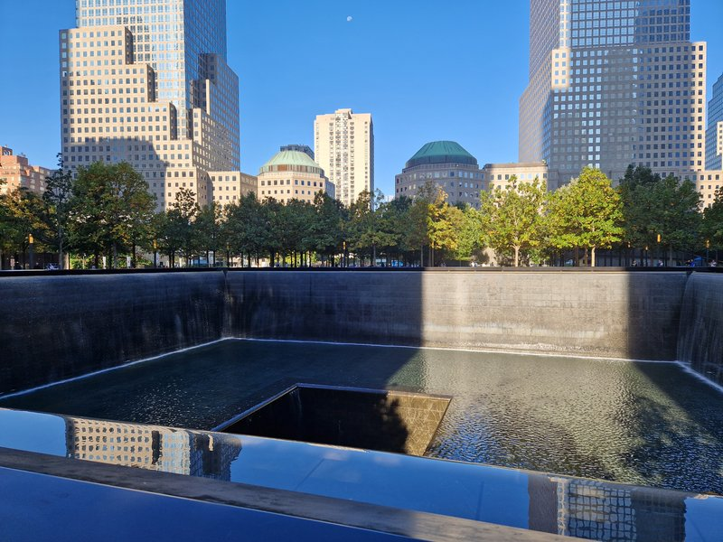
🚶 3 min · 🚕 4 min → One World Observatory
2.
One World Observatory
↳ The tallest building in the Western Hemisphere rises at a height deliberately symbolic of the nation. The observatory on floors 100–102 delivers a 360° panorama that spans five states. A sky-rise experience with genuine emotional weight given the site it stands on.
🏛️ Daily 9:00am - 10:00pm
⏰ ~1 hr
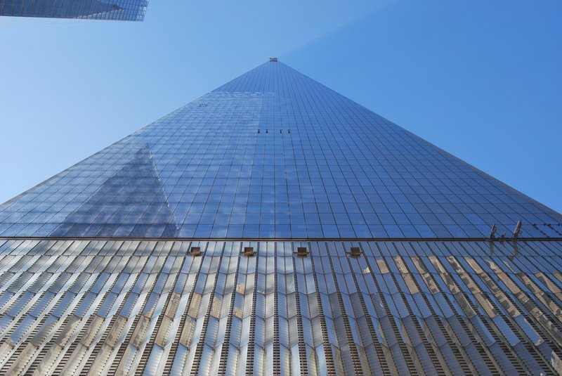
🚶 15 min · 🚕 8 min → Brooklyn Bridge
3.
Brooklyn Bridge
↳ A nineteenth-century suspension bridge — a cathedral of cables and granite towers — one of the great civic achievements of any age. Walk the elevated wooden pedestrian path from Manhattan to Brooklyn for skyline views that improve with every step.
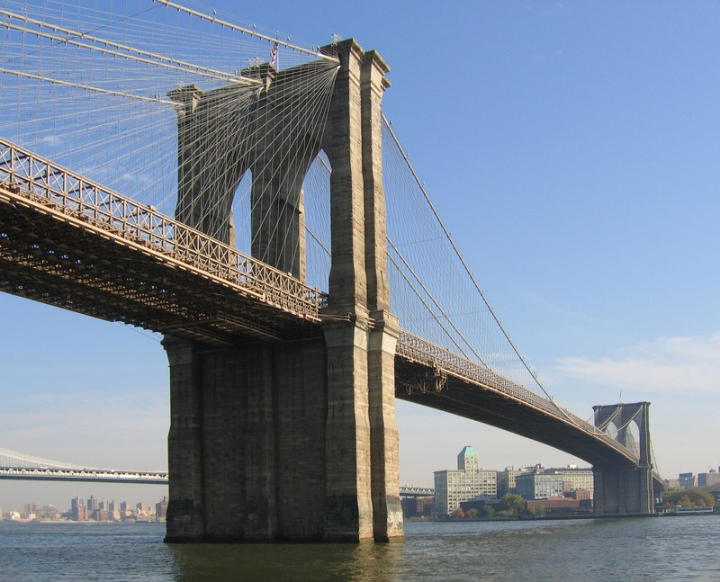
🚶 30 min · 🚕 12 min → Brooklyn Heights Promenade
4.
Brooklyn Heights Promenade
↳ A half-mile esplanade cantilevered over the BQE delivers the single best unobstructed view of the Manhattan skyline. One World Trade dominates the northern anchor, Victorian brownstones line the path behind you, and the whole island spreads across the water before you.
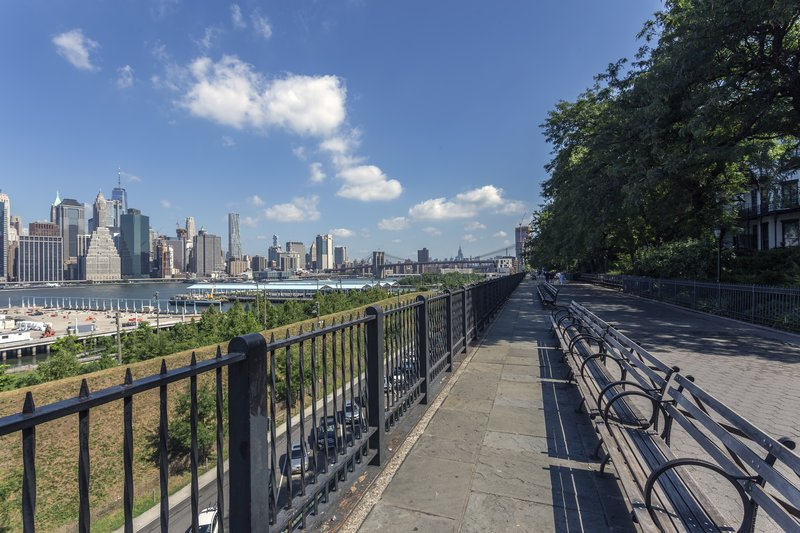
🚕 25 min → hotel
Day 2
🏨 From Hotel: 🚶 18 min · 🚕 8 min → The Frick Collection
1.
The Frick Collection
↳ Henry Clay Frick's gilded-age Fifth Avenue mansion houses one of the world's most intimate Old Master collections — Vermeer's Officer and Laughing Girl, Rembrandt's Self-Portrait, Velázquez's Philip IV in a single room. Recently reopened after a landmark renovation, now with a stunning new garden court.
🏛️ Monday 10:30am - 5:30pm · Wednesday - Sunday 10:30am - 5:30pm
🚫 Closed Tuesday
⏰ ~1 hr 30 min
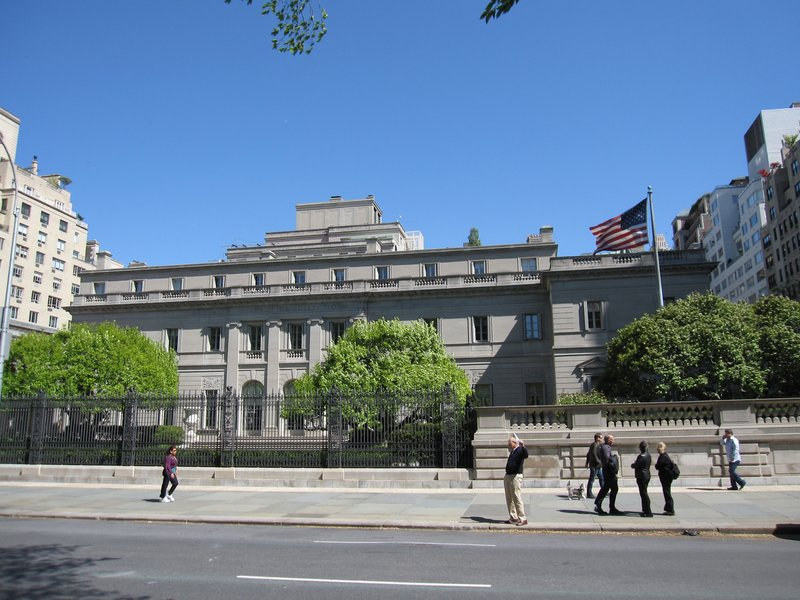
🚶 15 min · 🚕 5 min → Metropolitan Museum of Art
2.
Metropolitan Museum of Art
↳ Two million objects across five thousand years under one roof. The Egyptian wing's Temple of Dendur glows in late-afternoon light. Set priorities before entering — this building rewards a slow visit, not a sprint.
🏛️ Sunday - Tuesday 10:00am - 5:00pm · Thursday 10:00am - 5:00pm · Friday - Saturday 10:00am - 9:00pm
🚫 Closed Wednesday
⏰ ~2 hr 30 min
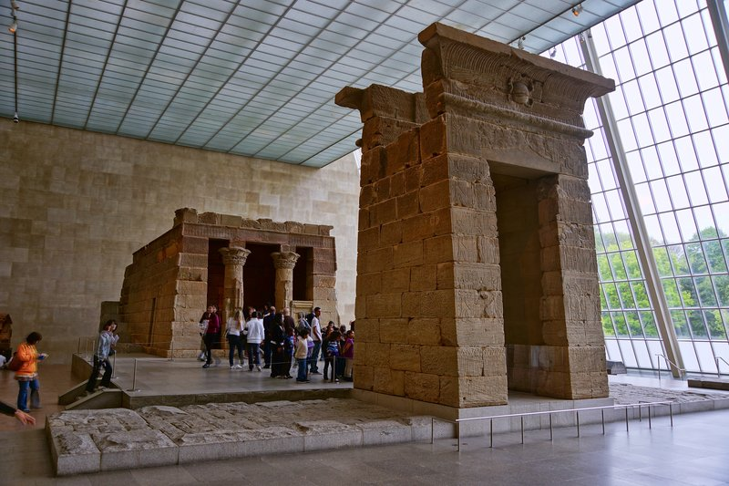
🚶 12 min · 🚕 5 min → Solomon R. Guggenheim Museum
3.
Solomon R. Guggenheim Museum
↳ Frank Lloyd Wright.s iconic spiral building remains one of the great architectural statements of the twentieth century — the continuous spiral ramp is the exhibit as much as what hangs on it. The collection runs from Kandinsky and Picasso to contemporary commissions. Walk down from the top for the best experience.
🏛️ Daily 10:30am - 5:30pm
⏰ ~1 hr 30 min
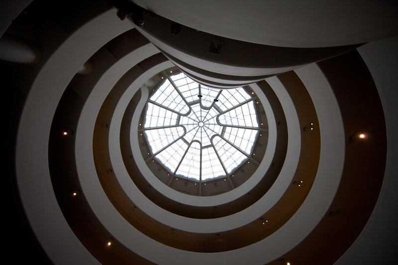
🚕 12 min → hotel
Day 3
🏨 From Hotel: 🚶 5 min · 🚕 4 min → Museum of Modern Art
1.
Museum of Modern Art
↳ MoMA's permanent collection is a condensed history of modern art — Van Gogh's Starry Night, Monet's Water Lilies panels, Picasso's Les Demoiselles d'Avignon, Warhol, Pollock. The sculpture garden, open to the sky, is one of Manhattan's great civic spaces.
🏛️ Monday - Thursday 10:30am - 5:30pm · Friday 10:30am - 8:30pm · Saturday - Sunday 10:30am - 5:30pm
⏰ ~2 hr
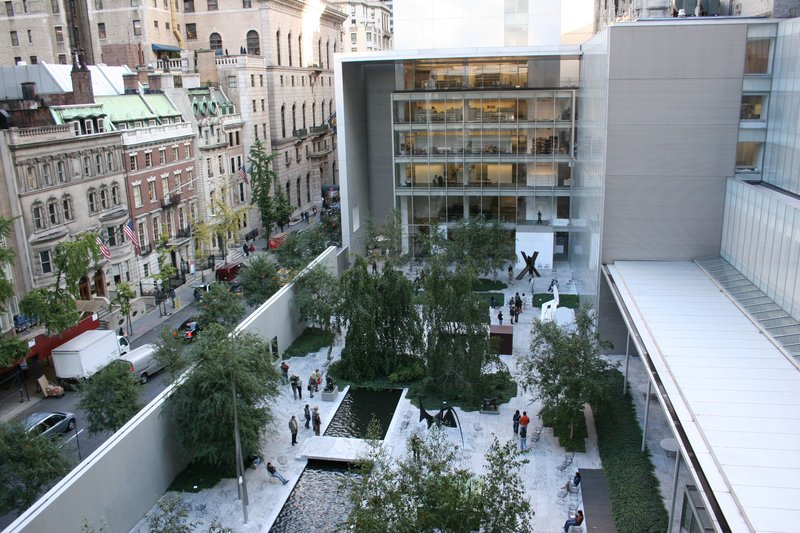
🚶 7 min · 🚕 4 min → Top of the Rock
2.
Top of the Rock
↳ Rockefeller Center's 70th-floor observation deck offers what many consider the best skyline photograph in New York — the Empire State Building dead-center against Midtown, with Central Park stretching north behind it. Three levels, the top fully open-air. Book the sunset time slot for the most dramatic light.
🏛️ Daily 8:00am - 12:00am
⏰ ~1 hr
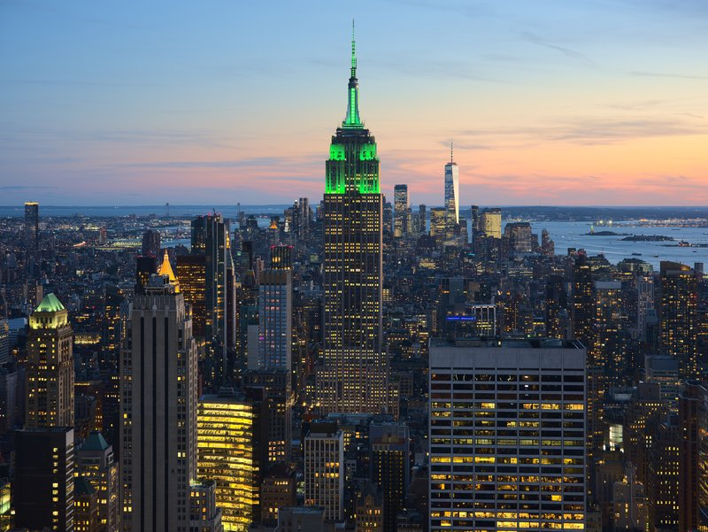
🚕 12 min → High Line
3.
High Line
↳ A decommissioned freight rail line transformed into a 1.45-mile elevated park with meadow plantings, public art, and Hudson River views. Walk south from 34th St to Gansevoort — it narrows to a glass-floored walkway over 10th Avenue.
🏛️ Daily 7:00am - 11:00pm
⏰ ~1 hr 30 min
🆓 Free
⚠️ Winter hours December - March: closes 7:00pm
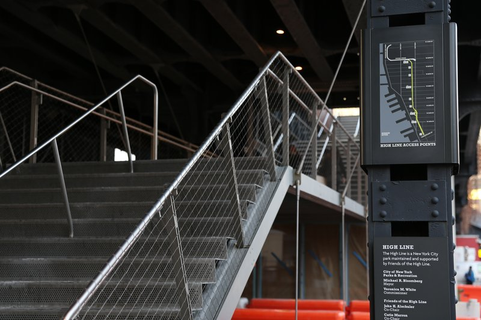
🚶 8 min · 🚕 5 min → Edge at Hudson Yards
4.
Edge at Hudson Yards
↳ The highest outdoor sky deck in the Western Hemisphere — on the 100th floor of 30 Hudson Yards. A glass-floored platform suspended in mid-air with 360° views across the Hudson and five states. The sensation of floating over Manhattan is real.
🏛️ Daily 9:00am - 10:00pm
⏰ ~1 hr
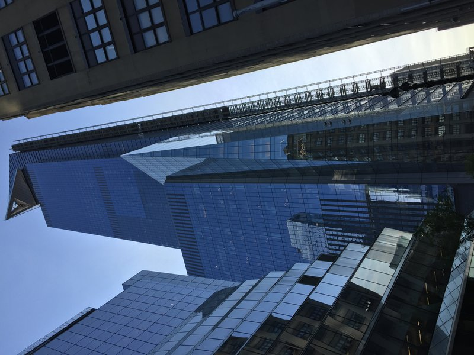
🚕 15 min → hotel
Day 4
🏨 From Hotel: 🚕 35 min → Brooklyn Museum
1.
Brooklyn Museum
↳ The second-largest art museum in the US — far less crowded than the Met — houses 1.5 million objects including one of the world's finest Egyptian collections and Judy Chicago's The Dinner Party in the Sackler Center for Feminist Art.
🏛️ Wednesday - Thursday 11:00am - 6:00pm · Friday 11:00am - 10:00pm · Saturday - Sunday 11:00am - 6:00pm
🚫 Closed Monday & Tuesday
⏰ ~2 hr
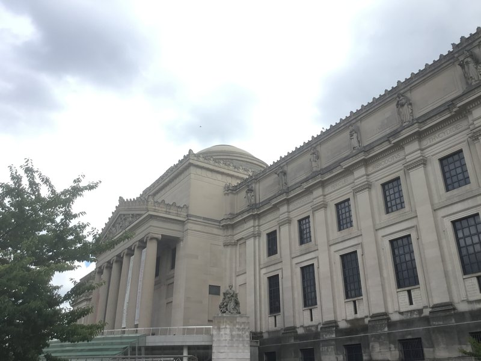
🚶 5 min · 🚕 4 min → Brooklyn Botanic Garden
2.
Brooklyn Botanic Garden
↳ Fifty-two acres of meticulously curated gardens including the Japanese Hill-and-Pond Garden — one of the oldest Japanese-inspired gardens in the United States, with a floating torii gate and a wooden viewing pavilion. The Cherry Esplanade hosts one of New York's most celebrated spring displays.
🏛️ Tuesday - Sunday 10:00am - 6:00pm
🚫 Closed Monday
⏰ ~1 hr 30 min
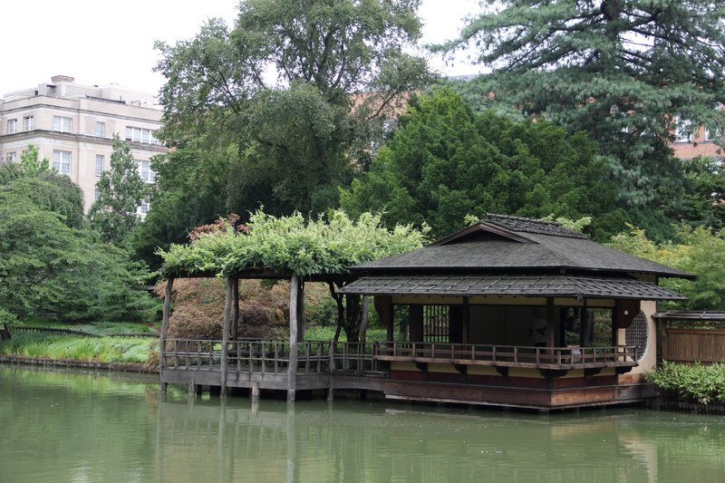
🚶 8 min · 🚕 5 min → Prospect Park
3.
Prospect Park
↳ Olmsted and Vaux considered this 585-acre Brooklyn park their finest work — a forest, a glacial lake, and the Long Meadow, one of the longest unbroken lawns in any American park. Brooklyn's living room; its rhythms feel genuinely local.
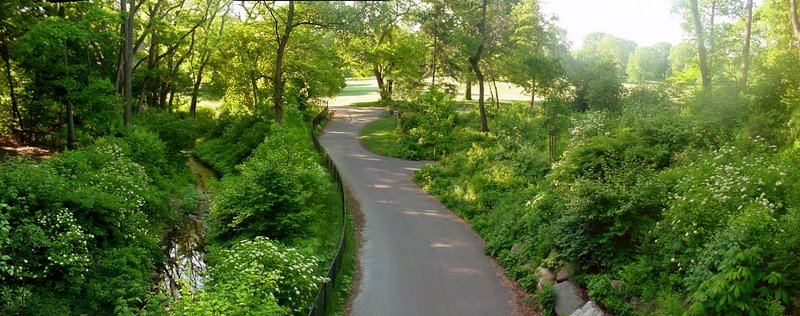
🚕 40 min → hotel
Day 5 – Train Day — Philadelphia
🏨 From Hotel: 🚶 20 min · 🚕 10 min → Penn Station
🚊 New York Penn Station → Philadelphia 30th St Station · Amtrak · 1 hr 20 min
7:00am New York Penn Station → 8:20am Philadelphia 30th St Station
8:00am New York Penn Station → 9:20am Philadelphia 30th St Station
9:00am New York Penn Station → 10:25am Philadelphia 30th St Station
🚉 ARRIVE Philadelphia 30th St Station: 🚕 15 min → Liberty Bell Center
1.
Liberty Bell Center
↳ Rung on July 8, 1776 to summon citizens to the first public reading of the Declaration of Independence. The crack appeared in the early nineteenth century. The glass pavilion frames the bell against Independence Hall across Chestnut Street — the visual axis is part of the experience.
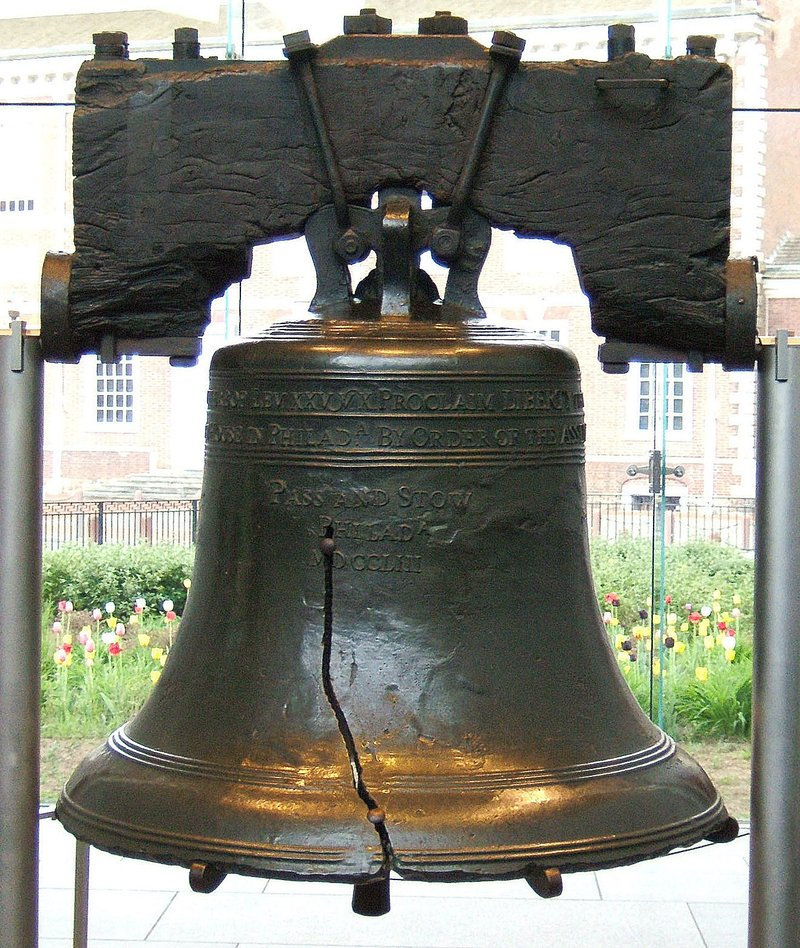
🚕 12 min → Philadelphia Museum of Art
2.
Philadelphia Museum of Art

↳ The grand neoclassical building at the top of the Benjamin Franklin Parkway — the "Rocky Steps" — houses 240,000 objects including the world's largest Duchamp collection, outstanding Impressionist paintings, and Japanese and Chinese temple rooms. The Parkway view from the top step is Philadelphia's defining vista.
🏛️ Monday 10:00am - 5:00pm · Thursday 10:00am - 5:00pm · Friday 10:00am - 8:45pm · Saturday - Sunday 10:00am - 5:00pm
🚫 Closed Tuesday & Wednesday
⏰ ~2 hr
🚶 12 min · 🚕 6 min → Eastern State Penitentiary
3.
Eastern State Penitentiary
↳ Eastern State pioneered solitary confinement under a radical philosophy of rehabilitation through silence. Al Capone served time here. Today the crumbling cellblocks — roofless, overtaken by plants, deeply atmospheric — constitute one of America's most extraordinary historic sites.
🏛️ Daily 10:00am - 5:00pm
⏰ ~1 hr 30 min
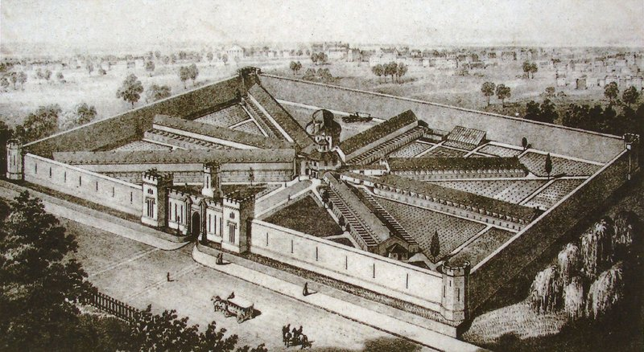
🚕 15 min → Philadelphia 30th St Station
🚊 Philadelphia 30th St Station → New York Penn Station · Amtrak · 1 hr 20 min
5:00pm Philadelphia 30th St Station → 6:20pm New York Penn Station
6:00pm Philadelphia 30th St Station → 7:25pm New York Penn Station
7:00pm Philadelphia 30th St Station → 8:25pm New York Penn Station
🚉 ARRIVE New York Penn Station: 🚶 20 min · 🚕 10 min → hotel
🗓️ Weekly Closures
Museums & Cultural Sites · Closed Tuesday
Art & History Museums · Closed Monday
Selected Museums · Closed Wednesday
📅 Tours
Viator
↳ The intersection of science and history: how NYC is built on trash, how rats thrive on human consumption, and how the city has wrestled with both during its four centuries of history. Led by a graduate of the NYC Rat Academy — one of the city's most distinctive tours.
🕐 9:00am · ⏳ 2 hr 30 min · 👥 Small group
🚕 20 min
↳ A 10,000-step journey through Harlem's cultural geography — the Apollo Theater, Sylvia's Soul Food, the home of Langston Hughes, Astor Row — told by a guide who literally wrote the book on the subject. The Harlem Renaissance and gentrification as living history.
🕐 9:00am · ⏳ 2 hr 30 min · 👥 Small group
🚕 20 min
↳ Six stops in historic Greenwich Village — a classic New York bagel, street falafel, a hot pizza slice, artisanal cupcakes, gourmet doughnuts, and a surprise sixth stop. Bohemian history woven through each stop.
🕐 9:00am · ⏳ 3 hr · 👥 Small group
🚶 18 min · 🚕 8 min
↳ Cross the Brooklyn Bridge with a guide who narrates its engineering history and cultural mythology, then explore DUMBO's cobblestone streets, waterfront galleries, and the spot where Washington St frames the bridge in the most photographed view in Brooklyn.
🕐 9:00am · ⏳ 2 hr 30 min · 👥 Small group
🚕 20 min
↳ A 90-minute cruise aboard a 1920s-style yacht around New York Harbor, past the Financial District, Ellis Island, and the Statue of Liberty. One complimentary drink included; table seating assigned. Max 80 guests — one of the most intimate ways to see the harbor.
🕐 10:00am · ⏳ 1 hr 30 min · 👥 80
🚕 12 min
GetYourGuide
📅 1. NYC: High Line · Chelsea · Meatpacking District Walking Tour · GetYourGuide · 4.9⭐ · 201+ reviews
↳ Two hours on the elevated park with a guide who contextualizes the railroad history, the architecture along the route, and the Meatpacking District's transformation from slaughterhouses to fashion district. Ends at Chelsea Market.
🕐 9:00am · ⏳ 2 hr · 👥 Small group
🚕 12 min
↳ Three layered neighborhoods packed into a single walk — SoHo's cast-iron loft buildings and independent galleries, the shrinking enclave of Little Italy, and the dense sensory world of Chinatown, with its herbal medicine shops and roast duck windows.
🕐 9:00am · ⏳ 2 hr 30 min · 👥 Small group
🚕 10 min
↳ Manhattan from 1,000 feet: Central Park, Midtown towers, Brooklyn Bridge, Ellis Island, and the Statue of Liberty — all in 15 minutes from the Downtown Heliport. Wraparound views with open sides.
🕐 9:00am · ⏳ 15–20 min · 👥 6
🚕 20 min
↳ A narrated military-style speedboat through New York Harbor, captained by a US Coast Guard-licensed guide. Close-up views of the Statue of Liberty, Brooklyn Bridge, and lower Manhattan skyline. Maximum 12 guests.
🕐 10:00am · ⏳ 1 hr · 👥 12
🚕 12 min
↳ NYC's fastest harbor tour — a jet-powered 45-mph speedboat to the Statue of Liberty with thumping music and guaranteed splash. Thirty minutes of kinetic chaos on the Hudson. Operated by Circle Line.
🕐 11:00am · ⏳ 30 min · 👥 200
🚕 10 min
TripAdvisor
↳ A rare look at abandoned and decommissioned subway stations beneath the city streets — the City Hall loop station, now decommissioned, remains one of New York's most beautiful rooms that almost no one sees. A genuinely unusual perspective on the city.
🕐 9:00am · ⏳ 2 hr · 👥 Small group
🚕 18 min
↳ A 1920s-style yacht circles New York Harbor at dusk with a live jazz trio on board. Views of the Statue of Liberty and lower Manhattan, first drink included. Maximum 63 guests — intimate scale for a harbor cruise.
🕐 7:30pm · ⏳ 1 hr 30 min · 👥 63
🚕 12 min
↳ A 90-minute daytime or sunset cruise on a 1950s-style boutique yacht around New York Harbor. Complimentary cocktail and hors d'oeuvres included. Statue of Liberty and lower Manhattan viewed from the water.
🕐 6:30pm · ⏳ 1 hr 30 min · 👥 Small yacht
🚕 12 min
↳ 90 minutes on the open water past One World Trade Center, Brooklyn Bridge, Statue of Liberty, Ellis Island, and Hudson Yards, narrated by a live guide. Daytime and evening departures; indoor and outdoor seating.
🕐 10:00am · ⏳ 1 hr 30 min · 👥 200
🚕 10 min
↳ Three hours of dining, dancing, and live entertainment on the Hudson River. Full-service sit-down dinner with panoramic skyline views; open bar packages available. NYC's most-reviewed dinner cruise.
🕐 7:00pm · ⏳ 3 hr · 👥 Large group
🚕 12 min
☕ Cappuccino
WatchHouse · 4.5⭐ · 145+ reviews
🏛️ Monday - Friday 6:30am - 6:30pm · Saturday - Sunday 8:00am - 6:30pm
🚶 3 min · 🚕 3 min
Little Collins · 4.5⭐ · 180+ reviews
🏛️ Monday - Friday 7:00am - 5:00pm · Saturday - Sunday 8:00am - 4:00pm
🚶 5 min · 🚕 4 min
Devoción · 4.6⭐ · 51+ reviews
🏛️ Monday - Friday 7:00am - 6:00pm · Saturday - Sunday 8:00am - 5:00pm
🚶 7 min · 🚕 5 min
Zibetto Espresso Bar · 4.5⭐ · 599+ reviews
🏛️ Monday - Friday 7:00am - 7:00pm · Saturday 8:00am - 6:00pm · Sunday 8:00am - 5:00pm
🚶 9 min · 🚕 5 min
Culture Espresso · 4.5⭐ · 1431+ reviews
🫕 Restaurants Near Hotel
Clement · 4.0⭐ · 172+ reviews
↳ Contemporary American · hotel restaurant at The Peninsula.
🏛️ Daily 5:30pm - 10:00pm
🏨 In the hotel · Ground floor
The Polo Bar · 4.0⭐ · 662+ reviews
↳ Ralph Lauren classic · rack of lamb · Polo Burger · equestrian interiors.
🏛️ Monday - Saturday 5:00pm - 10:30pm · Sunday 5:00pm - 10:00pm
🚶 2 min · 🚕 3 min
San Pietro Ristorante · 4.1⭐ · 114+ reviews
↳ Refined Southern Italian · house-made pasta · seasonal truffle risotto.
🏛️ Monday - Saturday 11:30am - 2:30pm · 5:00pm - 10:00pm
🚫 Closed Sunday
🚶 3 min · 🚕 3 min
Quality Italian · 4.3⭐ · 1671+ reviews
↳ Modern Italian-American steakhouse · wood-fired dishes · house-made pasta.
🏛️ Monday - Thursday 11:30am - 3:00pm · 5:00pm - 11:00pm · Friday - Saturday 11:30am - 3:00pm · 5:00pm - 11:30pm
🚫 Closed Sunday
🚶 5 min · 🚕 3 min
Estiatorio Milos · 4.5⭐ · 1187+ reviews
↳ Mediterranean seafood · whole fish by weight · grilled octopus · Greek.
🏛️ Monday - Saturday 11:30am - 3:30pm · 4:30pm - 12:00am · Sunday 12:00pm - 3:30pm · 4:30pm - 11:00pm
🚶 5 min · 🚕 3 min
🍽️ Downtown Restaurants
Delmonico's · 4.0⭐ · 1200+ reviews
↳ The oldest restaurant in the US · inventor of Eggs Benedict and Baked Alaska.
🏛️ Monday - Friday 11:30am - 10:00pm · Saturday - Sunday 4:00pm - 10:00pm
Fraunces Tavern Restaurant · 4.0⭐ · 800+ reviews
↳ Tavern in NYC's oldest building · Washington's 1783 farewell address.
🏛️ Monday - Friday 11:00am - 9:00pm · Saturday - Sunday 11:00am - 8:00pm
Manhatta · 4.1⭐ · 600+ reviews
↳ Contemporary American · 60th floor · Financial District panorama.
🏛️ Monday - Friday 11:30am - 10:00pm · Saturday 5:00pm - 10:00pm
🚫 Closed Sunday
Jungsik · 4.3⭐ · 250+ reviews
↳ Korean-influenced contemporary tasting menu · French fine-dining lens.
🏛️ Tuesday - Thursday 6:00pm - 10:00pm · Friday - Saturday 5:30pm - 10:30pm
🚫 Closed Sunday & Monday
Katz's Delicatessen · 4.2⭐ · 10000+ reviews
↳ Lower East Side institution · definitive NYC pastrami on rye.
🏛️ Sunday - Tuesday 8:00am - 10:45pm · Wednesday - Thursday 8:00am - 12:00am · Friday 8:00am - 2:45am · Saturday 8:00am - 2:45am
🍮 Local Tastes
New York–Style Pizza
↳ A wide, thin, foldable slice with a crisp-then-chewy crust — baked in a coal or gas deck oven, eaten standing at the counter. The style evolved from Neapolitan in the early 1900s and is now legally inseparable from the city itself.
New York Bagel
↳ Chewy inside, glossy crust — boiled before baking, a technique brought by Eastern European Jewish immigrants. The New York water is widely credited for the result. Eat with lox and cream cheese.
NYC Pastrami on Rye
↳ Beef brisket cured in salt and spices, then smoked and steamed — piled on seeded rye with brown mustard. The Lower East Side Jewish deli tradition at its apex. Order it hand-sliced, never the machine-cut version.
New York Cheesecake
↳ Dense, rich, creamy — the New York style uses cream cheese, heavy cream, and a graham cracker crust. Nothing subtle about it. Best eaten at a diner counter.
🎭 Shows, Performances & Concerts
Carnegie Hall
↳ Three concert venues at 57th and Seventh — Stern Auditorium, Zankel Hall, Weill Recital Hall. Orchestras, soloists, jazz, and world music year-round.
🚶 6 min · 🚕 4 min
Metropolitan Opera
↳ The largest repertory opera in the world — 3,800 seats at Lincoln Center. Grand tier boxes, Chagall murals, September–June season.
🎟️ metopera.org
🚶 22 min · 🚕 10 min
Broadway
↳ Over 40 active theaters between 41st and 54th Streets. Same-day discount tickets at the TKTS booth, Broadway at 47th St, from 10:00am daily.
🎟️ broadway.com
🚶 12 min · 🚕 6 min
🚆 Train Stations Near Hotel
🚊 Pennsylvania Station · Moynihan Train Hall
Northeast Regional · Acela · NJ Transit · LIRR → Philadelphia · Washington DC · Boston · NJ · Long Island.
🚶 20 min · 🚕 10 min
🚄 Pennsylvania Station · Moynihan Train Hall
Acela high-speed → Philadelphia 1 hr 3 min · Washington DC 2 hr 45 min · Boston 3 hr 35 min.
🚶 20 min · 🚕 10 min
⛲️ Day Trips by Train
New Haven · 1 hr 45 min
↳ Yale's campus includes the Beinecke Rare Book Library and the Yale Center for British Art — two world-class institutions in a walkable collegiate town.
Washington DC · 2 hr 45 min
⭐ Michelin Restaurants
⭐⭐⭐ Per Se
↳ Contemporary American tasting menu · Thomas Keller · overlooking Central Park.
🚶 20 min · 🚕 7 min
⭐⭐⭐ Le Bernardin
↳ Contemporary French · Eric Ripert · three Michelin stars · Midtown.
🚶 11 min · 🚕 9 min
⭐⭐⭐ Eleven Madison Park
↳ Plant-based tasting menu · Daniel Humm · landmark art deco dining room.
🚶 36 min · 🚕 21 min
Not shown: 2 ⭐⭐⭐ · 14 ⭐⭐ · 55 ⭐ more in New York City